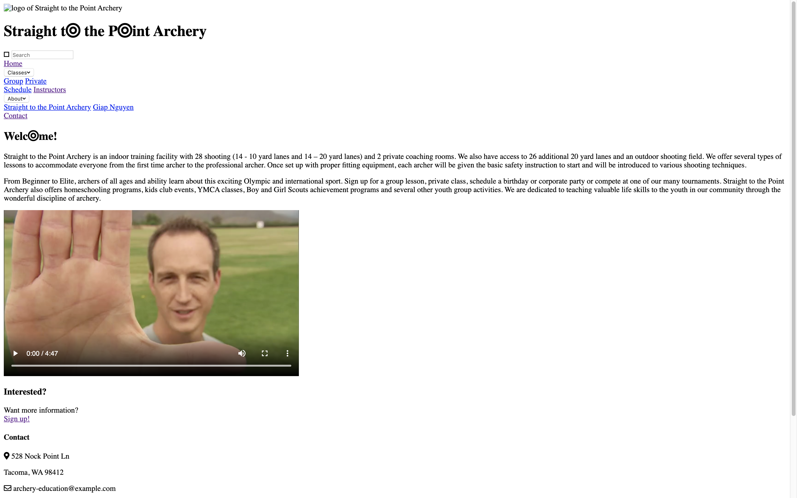

HTML & CSS Foundations
Lesson 1: Introduction to Git and HTML
Description: 10.10.2019 Using the terminal (for Macs) to create directories and files, using Git
and Github, and HTML5
Assignment: Code an HTML document with at least 15 lines of code.
this link opens in a new tab Jennifer's first HTML code
Jennifer's first HTML code
Lesson 2: HTML cont.
Description: 10.17.2019 Introduction to attributes, relative/external links, HTML5-specific elements,
how to embed images and using copyright-safe images from the Internet (Creative Commons)
Assignment: Start portfolio project--create a simple two-page site, one
one of the pages being a list of the assignments done so far with images for
each item on the list.
this link opens in a new tab Jennifer's first start on her portfolio project
Jennifer's first start on her portfolio project
Lesson 3: CSS Basics
Description: 10.24.2019 Introduction to CSS, how to style using HTML and a stylesheet
Assignment: Use CSS with a stylesheet to decorate portfolio website.
this tab opens in a new tab Jennifer's portfolio project with CSS applications
Jennifer's portfolio project with CSS applications
Lesson 4: CSS Box Model
Description: 10.31.2019 Introduction to the box model (content, padding, border, margin) and
positioning using the CSS properties position, float and clear.
Assignment: Create a mockup homepage (of a faux cat business)
and one other page using knowledge of the box model and the position property.
this tab opens in a new tab
Jennifer's first attempt at positioning boxes for webpage layout
Lesson 5: Flexbox & Fonts
Description: 11.7.2019 Introduction to flexbox (a better alternative to floats when designing website
layouts), CSS webfonts and external webfonts
Assignment: Continue working on portfolio project while incorporating
GoogleFonts, FontAwesome and flexbox
this tab opens in a new tab
Revamp of Jennifer's portfolio website using flexbox, positioning, etc.
Lesson 6: Advanced CSS
Description: 11.14.2019 Introduction to user experience, user
stories, advanced CSS selectors and CSS transitions
Assignment: Update portfolio project styling using at least 3 CSS transitions and/or nth-child selectors
this tab opens in a new tab
An attempt to apply some advanced CSS selectors on a group of images
Lesson 7: Site Architecture
Description: 11.21.2019 Learn about user experience, how to make user stories, get introduced to project workflow
Assignment: Build part of a website for an imaginary archery instruction client.
Sketch layout design of two pages, then write two pages of HTML for the business.
this tab opens in a new tab
Rough site architecture of faux archery instruction business
Lesson 8: Multimedia & Grids
Description: 12.5.2019 Code HTML audio and video elements, introduction to CSS grid
Assignment: Style the two pages of HTML of faux archery business using flexbox and CSS grid, incorporate one multimedia element
this link opens in a new tab
Mockup of faux archery business using flexbox and CSS grid
Lesson 9: Web Forms
Description: 12.12.2019 How to make forms on HTML and styling them with CSS
Assignment: Add a new page to one of the course projects that includes a contact form with at least five different inputs
this link opens in a new tab
Revamped contact page on Jennifer's portfolio website